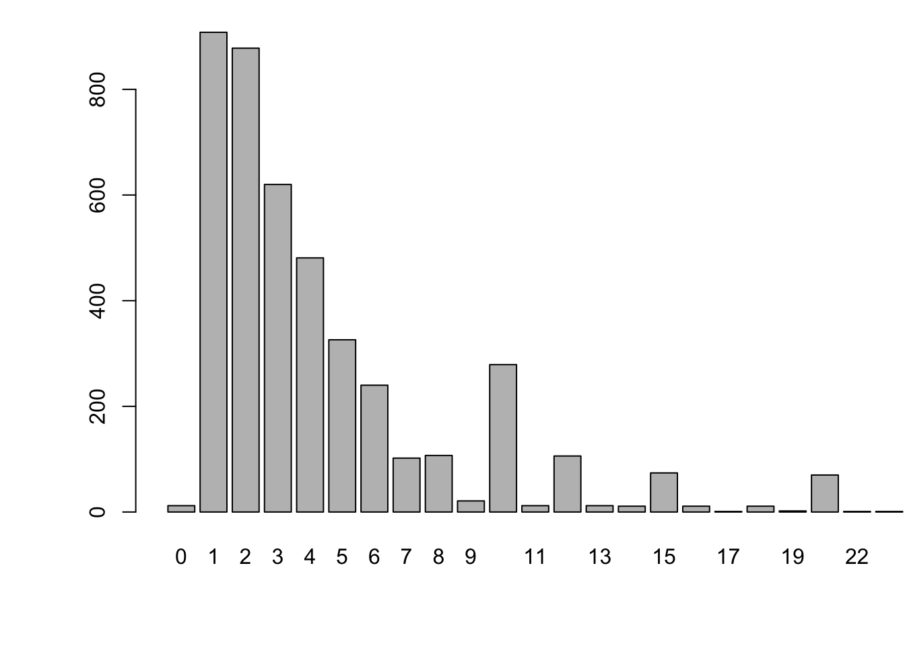
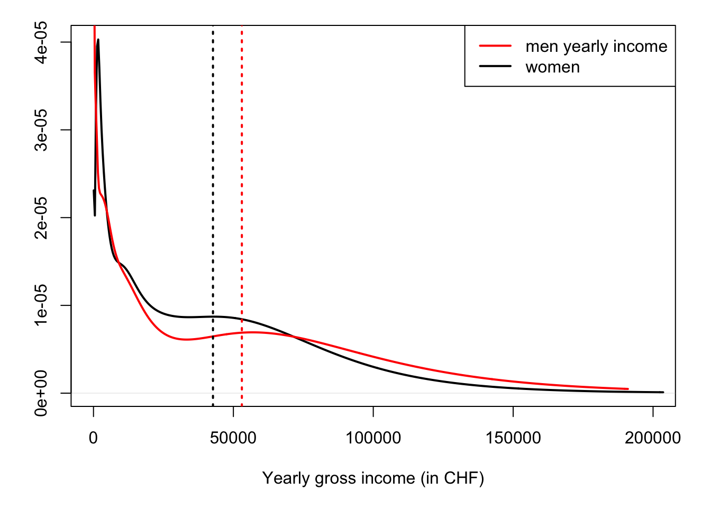

Chapter 2 Central Limit Theorem
The law of large numbers (LLN) and the central limit theorem (CLT) are two fundamental theorems of probability. The former states that the sample mean converges in probability to the population mean (when it exists). The latter states that the distribution of the sum (or average) of a large number of independent, identically distributed (i.i.d.) variables with finite variance is approximately normal, regardless of the underlying distribution (as long as it features a finite variance).
2.1 Law of large numbers
Definition 2.1 (Sample and Population) In statistics, a sample refers to a finite set of observations drawn from a population.
Most of the time, it is necessary to use samples for research, because it is impractical to study the whole population. Typically, it is rare to observe the population mean, and we often use instead sample means (or averages). The sample average of \(\{x_1,\dots,x_n\}\) is given by: \[ \overline{x}_n = \frac{1}{n}\sum_{i=1}^n x_i. \] This sample mean is an estimator of the true (population) mean \(\mathbb{E}(x_i)\) (assuming the latter exists). According to the law of large numbers (Theorem 2.1), this estimator is consistent. (see Def. 9.16 for the definition of convergence in probability.)
Theorem 2.1 (Law of large numbers) If the random variables \(x_i\) are i.i.d. and if \(\mathbb{E}(x_i)=\mu < \infty\), then the sample mean (\(\overline{x}_n\)) is a consistent estimator of the population mean (\(\mu\)). In other words, the sample mean converges in probability to the population mean.
Proof. See Appendix 9.3.4.
Example 2.1 Suppose one is interested in the average number of doctor consultations over 12 months, for Swiss people. One can get an estimate by computing the sample average of a large dataset, for instance using the Swiss Household Panel (SHP):
Figure 2.1 shows the empirical distribution of the number of doctor visits.
Code
library(AEC) # to load the shp data-frame.
shp <- haven::zap_labels(AEC::shp) # retain values, remove import-only labels
Nb.doct.visits <- shp$p19c15
Nb.doct.visits <- Nb.doct.visits[Nb.doct.visits>=0] # remove irrelevant observations
par(plt=c(.15,.95,.2,.95))
barplot(table(Nb.doct.visits),xlim=c(0,25))
Figure 2.1: Distribution of the number of doctor visits. Source: Swiss Household Panel.
Let us compute the sample mean, variance, and standard deviation:
Code
| Mean | Variance | SD |
|---|---|---|
| 5.254 | 79.506 | 8.917 |
How to know whether the sample mean is a good estimate of the true (population) average? In other words, how to measure the accuracy of the estimator?
A first answer is provided by the Chebychev inequality. Assume the \(x_i\)’s are independently drawn from a distribution of mean \(\mu\) and variance \(\sigma^2\). We have: \[ \mathbb{E}(\bar{x}_n) = \mu \quad \mbox{ and } \quad \mathbb{V}ar(\mu - \bar{x}_n) = \frac{1}{n}\sigma^2 \underset{n \rightarrow \infty}{\rightarrow} 0. \] The Chebychev inequality (Proposition 9.11) states that, for any \(\varepsilon > 0\) (even very small), we have: \[ \mathbb{P}(|\bar{x}_n-\mu|>\varepsilon) \le \frac{\mathbb{V}ar(\mu - \bar{x}_n)}{\varepsilon^2} = \frac{\sigma^2}{n\varepsilon^2} \underset{n \rightarrow \infty}{\rightarrow} 0. \] Consider for instance the estimation of the average number of doctor visits (Example 2.1). In this example, the sample length is \(n=\) 4389, we have \(\bar{x}_n=\) 5.25, and the variance \(\sigma^2\) was approximately equal to 79.51. Therefore, taking \(\varepsilon=0.5\), we have that \(\mathbb{P}(|\bar{x}_n-\mu|>\varepsilon)\) is lower than \(\frac{\sigma^2}{n\varepsilon^2} \approx\) 0.072.
However, this only gives bounds for such probabilities. The central limit theorem provides richer information, as it gives the approximate distribution of the estimation error.
2.2 Central Limit Theorem (CLT)
Theorem 2.2 (Lindberg-Levy Central limit theorem, CLT) If \(x_n\) is an i.i.d. sequence of random variables with mean \(\mu\) and (finite) variance \(\sigma^2\), then: \[ \boxed{\sqrt{n} (\bar{x}_n - \mu) \overset{d}{\rightarrow} \mathcal{N}(0,\sigma^2), \quad \mbox{where} \quad \bar{x}_n = \frac{1}{n} \sum_{i=1}^{n} x_i.} \] [“\(\overset{d}{\rightarrow}\)” denotes the convergence in distribution (see Def. 9.19)]
Proof. See Appendix 9.3.4.
According to the CLT, when \(n\) is large and whatever the distribution of the \(x_i\)’s (as long as it features an average \(\mu\) and a variance \(\sigma^2\)), the error between \(\bar{x}_n\) and \(\mu\) can be seen as a random variable that is normally distributed; it is of mean zero and its standard deviation is \(\sigma/\sqrt{n}\). (We then say that the convergence rate is in \(\sqrt{n}\).) The knowledge of the quantiles of the normal distribution can then be used to compute approximate confidence intervals for \(\mu\) (based on the sample \(\{x_1,\dots,x_n\}\)).
This web interface illustrates the CLT with simulations (select the “CLT” block).
The CL theorem was first postulated by the mathematician Abraham de Moivre. In an article published in 1733, he used the normal distribution to approximate the distribution of the number of heads resulting from many tosses of a fair coin. This finding was nearly forgotten until Pierre-Simon Laplace recalled it in his Théorie analytique des probabilités, published in 1812. Laplace expanded De Moivre’s finding by approximating the binomial distribution with the normal distribution.
Exercise 2.1 Consider Buffon’s experiment (Example 1.2). We have seen that \(\pi\) can be estimated by counting the fraction of times the needles cross the grooves of the floor.2 Using the CLT, determine the (approximate) minimal number \(n\) of needles that one has to throw to get an estimate \(\hat\pi\) (\(= 1/\bar{X}_n\)) of \(\pi\) that is such that there is a 95% chance that \(\pi \in [\hat\pi-0.01,\hat\pi+0.01]\)?
Exercise 2.2 Assume you have a lot of time and a coin. How would you approximate the 100 percentiles of the \(\mathcal{N}(0,1)\) distribution?
The CLT can be extended to the case where each \(x_i\) is a vector. (In that case, and if the dimension of \(x_i\) is \(m\), then \(\mathbb{V}ar(x_i)\) is a \(m\times m\) matrix.) Here is the multivariate CLT:
Theorem 2.3 (Multivariate Central limit theorem, CLT) If \(\mathbf{x}_n\) is an i.i.d. sequence of \(m\)-dimensional random variables with mean \(\boldsymbol\mu\) and variance \(\Sigma\), where \(\Sigma\) is a positive definite matrix, then: \[ \boxed{\sqrt{n} (\bar{\mathbf{x}}_n - \boldsymbol\mu) \overset{d}{\rightarrow} \mathcal{N}(\mathbf{0},\Sigma), \quad \mbox{where} \quad \bar{\mathbf{x}}_n = \frac{1}{n} \sum_{i=1}^{n} \mathbf{x}_i.} \]
2.3 Comparison of sample means
As said at the beginning of this chapter, the CLT is a key statistical result that has numerous applications. An important one is the statistical comparision of sample means:
Consider two samples \(\{m_1,\dots,m_{n_m}\}\) and \(\{w_1,\dots,w_{n_w}\}\). Assume that the \(m_i\)’s (respectively the \(w_i\)’s) are i.i.d., with mean \(\mu_m\) and variance \(\sigma^2_m\) and of \(w_i\)’s (resp. with mean \(\mu_w\) and variance \(\sigma^2_w\)).
If \(n\) is large, according to the CLT, we approximately have: \[ \sqrt{n_m}(\bar{m} - \mu_m) \sim \mathcal{N}(0,\sigma^2_m) \quad and \quad \sqrt{n_w}(\bar{w} - \mu_w) \sim \mathcal{N}(0,\sigma^2_w), \] or \[ \bar{m} \sim \mathcal{N}\left(\mu_m,\frac{\sigma^2_m}{n_m}\right) \quad and \quad \bar{w} \sim \mathcal{N}\left(\mu_w,\frac{\sigma^2_w}{n_w}\right). \]
if the \(m_i\)’s and the \(w_i\)’s are independent, then \(\bar{m}\) and \(\bar{w}\) also are, and we get: \[ \bar{m} - \bar{w} \sim \mathcal{N}\left(\mu_m-\mu_w,\sigma^2\right) \quad with \quad \sigma^2 = \frac{\sigma^2_m}{n_m}+\frac{\sigma^2_w}{n_w}. \] This can be used to test the null hypothesis \(H_0: \; \mu_m-\mu_w = 0\) (see Section 3). Indeed under this assumption, the probability that \(\bar{m} - \bar{w}\) is in \([-1.96\sigma,1.96\sigma]\) (respectively in \([-2.58\sigma,2.58\sigma]\)) is approximately 0.95 (respectively 0.99) [see Table 9.1].
For instance, if we find, using our sample, that \(\bar{m} - \bar{w}\) is not in \([-2.58\sigma,2.58\sigma]\), then we reject the null hypothesis at the 1% significance level.
Example 2.2 (Comparison of sample means) Let us use the Swiss Household Panel (SHP) dataset to test the equality between men and women incomes, for Swiss people under the age of 35.
The next lines of codes construct two samples of incomes; one for men (income.m), and one for women (income.w).
## Warning: package 'logKDE' was built under R version 4.5.2Code
Figure 2.2 displays the empirical densities of incomes for men and women. Vertical dashed lines indicate sample means:
Code
par(plt=c(.1,.95,.2,.95)) # adjust margins
plot(logdensity(income.w),lwd=2,xlim=c(0,200000),main="",
xlab="Yearly gross income (in CHF)",ylab="") # x and y labels
lines(logdensity(income.m),col="red",lwd=2)
abline(v=mean(income.m),col="red",lty=3,lwd=2)
abline(v=mean(income.w),col="black",lty=3,lwd=2)
legend("topright",c("men yearly income","women"),lty=1,lwd=2,col=c("red","black"))
Figure 2.2: Distribution of yearly gross incomes for Swiss residents under the age of 35. Source: SHP. Vertical dashed lines indicates the sample mean.
Let us compute \(\bar{m}\), \(\bar{w}\), and \(\sigma\):
Code
## [1] 53035.023 42708.227 2427.425Under the “equality assumption”, their would a probability of only 5% (respectively 1%) for \(\bar{m} - \bar{w}\) not to be in \([\)-4758,4758\(]\) (respectively in \([\)-6263,6263\(]\)). Since \(\bar{m} - \bar{w}\) is equal to 10327, we reject the null hypothesis at the 5%, and even 1%, significance levels.
More precisely, the expectation of this fraction is equal to \(1/\pi\).↩︎